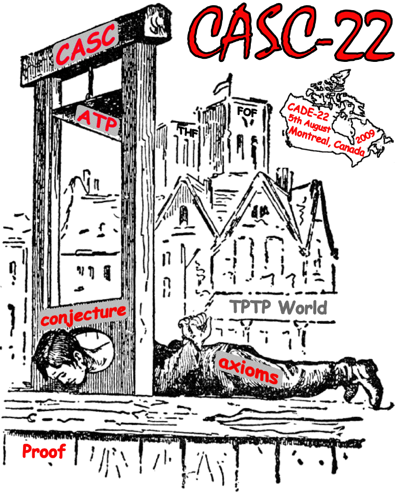

Conclusion

- Fulfilled the main aims and motivations
- Evaluated the relative abilities of current ATP systems
- Stimulated development of and interest in ATP systems
- Development efforts have received public recognition
- Provided exposure for system builders ...
both within and beyond the community
- Provided an overview of the implementation state of
running, fully automatic, first order ATP systems
- Next year ...
- THF competition division
- Discontinuation of FOF and FNT assurance classes
- Possible merge of FNT and SAT divisions
- Possible TFF with arithmetic division
- Another great T-shirt
- FLoComp ??
- Your Prover (You)